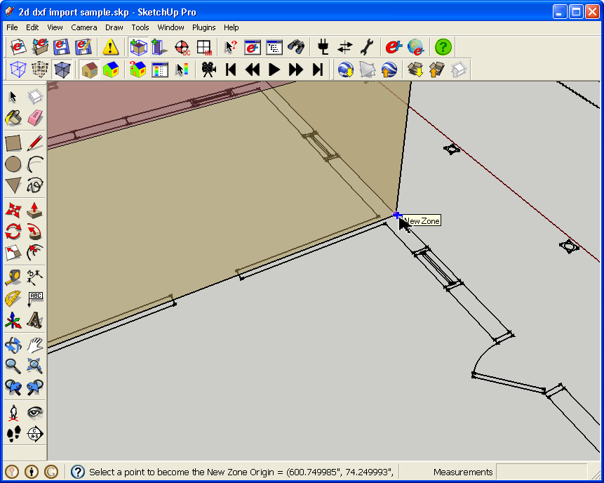
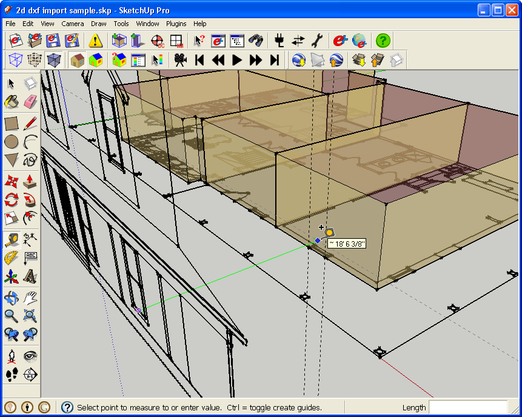
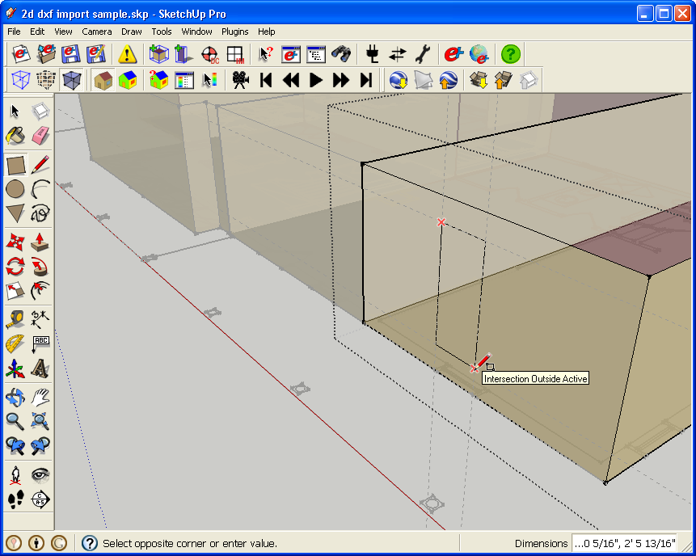
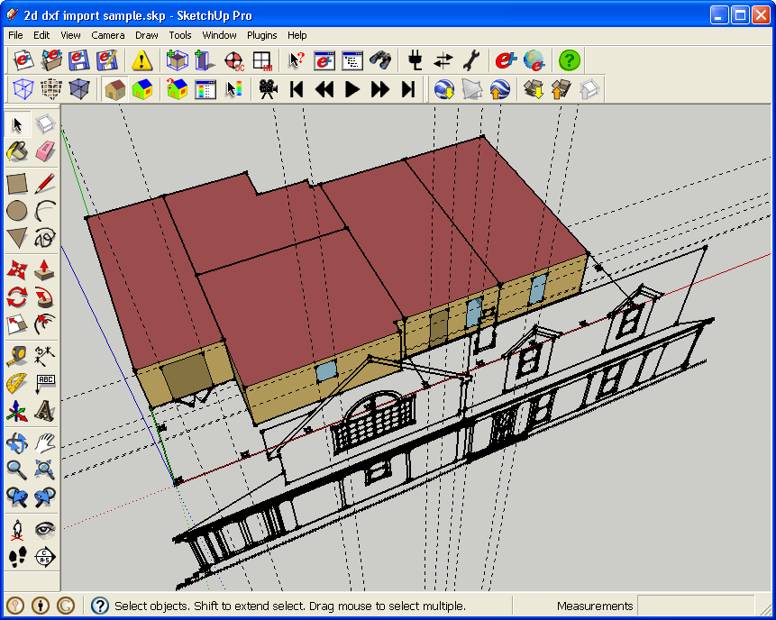

|
|
Importing 2D DXF's into OpenStudio as a modeling guide
Importing the DXF
- The default installation of Google SketchUp 7 Pro is already setup to import and export DXF's and DWG's
- The default installation of the free version of Google SketchUp 7 does not have a DXF/DWG importer/exporter. So if you want to model from DXF's then the first thing you will need to do is to download and install this from the link below. If you are familiar with the process on SketchUp6 or SketchUp7Pro this will be exactly the same. After installing you will have to restart SketchUp for the plugin to load.
- You will have to use "File/Import" vs. "File/Open" to import the file. When you choose import make sure you set the file type to (*.dwg/*.dxf) as shown below. You may also need to click "Options" to see if units are being handeled correctly so scale preserved.
- Below is what your DXF will look like once imported.
- If you look at your layers you will notice that it preserves the DXF/DWG layer structure. So you may be able to visually clean up the model by turning off unnecessary layers.
- If you have an elevation with your DXF you will want to rotate that up so you can refer to heights on it. After you select the elevation entities pick the SketchUp rotate tool. You need to set the plane and origin for the rotation. I make a temporary cube to easily pickthe plane I want to rotate on, but there are other methods as well, such as switching to one of the standard camera views.
- Once you get the rotation plane set, you can hold down shift to lock it in. This allows you to move to pick the origin without losing your rotation plane.
- I pick an origin on the elevation that matches the floor plane for the first floor. This keeps elevation in sync with the plan. When I'm done with the rotation I delete my temporary cube.


- If you are careful about how you set things up you can re-import updated cad files at a later date.
Adding EnergyPlus Zones
- Now that you have your dxf preped, it is time to add EnergyPlus Zones.
- Make sure you are not in your dxf component and create a new zone, and enter into the zone to create the geometry.
- Draw the plan for your first zone. In this case it was just a rectangle.

- Next I used the elevation to find the height for this zone. Later I will use it to pull in window heights

- Add the next zone and repeat.

- Below you can see the project with the other zones added in, I set the view to X-ray mode so you can see the plan and the zones.

- The following images show the process for adding sub-surfaces. I drew temporary construction lines from both the plan and from the elevation to help locate and size the window.




- If you had the second floor plan you could insert that at the appropriate height and continue your modeling. You would have to model the attic as well.
- If you would like to re-create this, I have placed the DWG file of architectural plan and elevation in OpenStudio's Examples folder. I have also saved the IDF file with the Energy Plus objects I created.
|
|
|